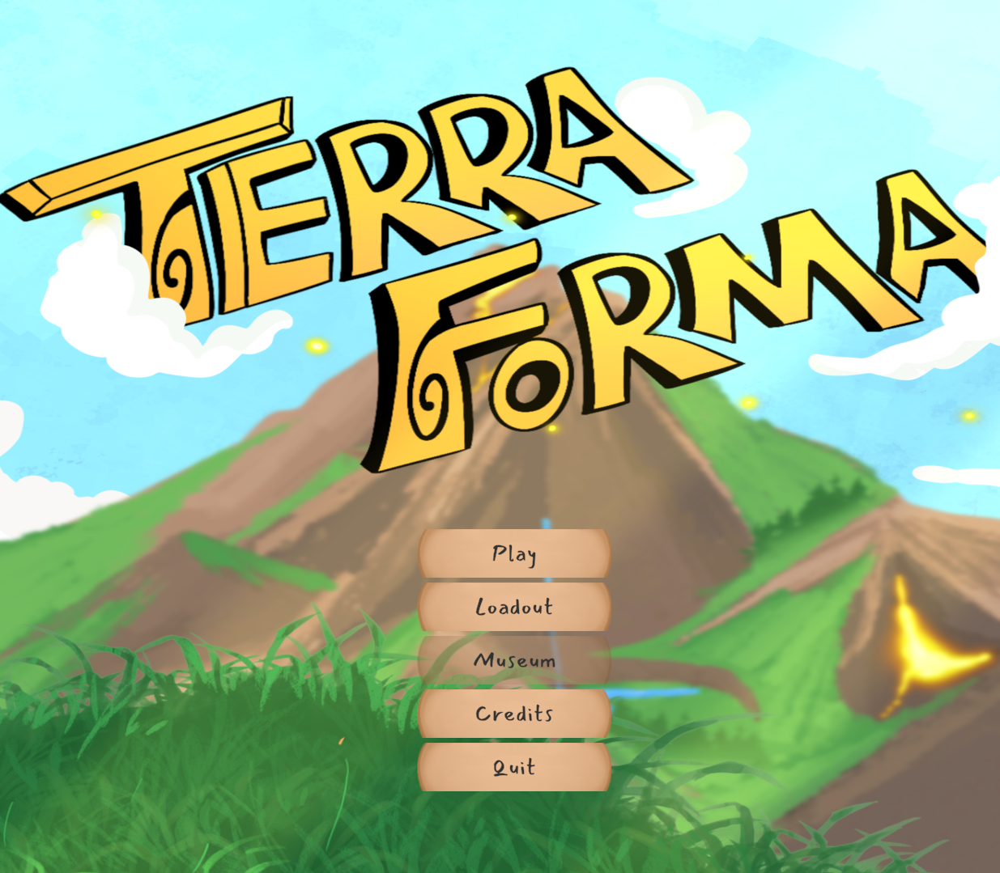
Unity
Software Engineering
Combat Systems Engineering
Game Design
C#
Systems Design
Level Design
UI
Unity
Fall 2024 - Spring 2025
Programmer
Gameplay Engineer
Level Designer
Spells Designer
UI Designer
Andrew Simonini
Thomas Branchaud
Jade Logan
Mackenzie Appleyard
Juliet Morin
Naomi Gelfond
| WASD | Move Camera |
| Q/E | Rotate Camera |
| Left Click | Select |
| Right Click | Deselect |
| Enter | End Turn |
| Shift | 2x Speed |
| V | Toggle Tree Visibility |
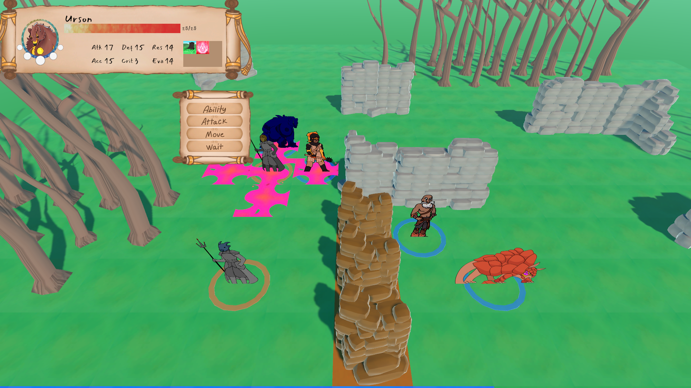
Change the world in this tactical RPG with terrain-changing elemental magic.
Terraforma is a tactical strategy RPG where the main characters can change the terrain with a mix of elemental powers. Lead a small party to rout the enemy as you burn, build, and soak the land!
This was my year-long undergraduate capstone project at Worcester Polytechnic Institute for both my Computer Science and IMGD majors.
| Character | Spell | Effect | |
| Lancin |
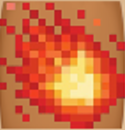 Fireball |
Drops a fireball on a set 3x3 location, dealing damage and leaving flames behind. | |
|
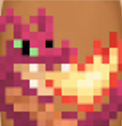 Dragon Breath |
Spews massive flames in any direction. Deals a lot of damage but costs a lot of MP. | ||
|
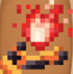 Support Flames |
Grants strength to characters currently standing in fire. | ||
|
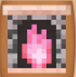 Hearthfire |
Sets a pink flame that rejuvenates the HP of those who feel its warmth. | ||
| Wold |
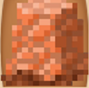 Wall |
Makes three rock walls to impede the foe's path. | |
|
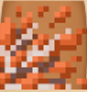 Shatterpoint |
Breaks rock walls in front of you, leaving unsteady terrain and hitting foes behind it. | ||
|
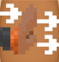 Shove |
Forcefully pushes an ally, enemy, or rock wall away, damaging foes if they hit a wall. | ||
|
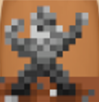 Stone Body |
Hunkers down in stone armor before the sharp gravel explodes back on the foes that struck you. | ||
| Althea |
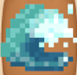 Tidal Wave |
Strikes with a wave at melee range, pushing foes back and drenching the terrain. | |
|
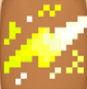 Lightning |
Strikes with a thunderbolt at long range, electrifying wet terrain to hit adjacent foes. | ||
|
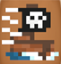 Smooth Sailing |
Dramatically increases movement speed. | ||
|
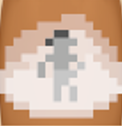 Mist Cloud |
Swirls up a mist that increases evasion for people inside. | ||
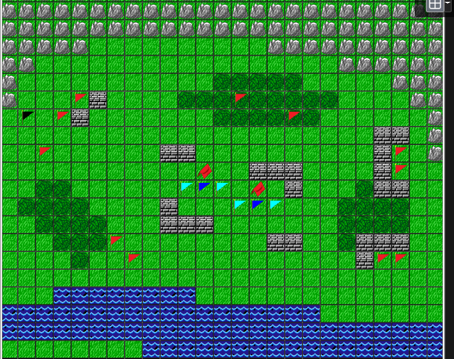
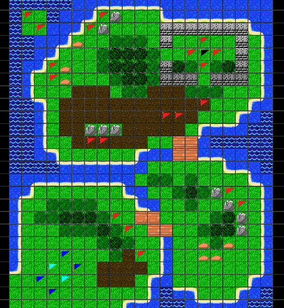
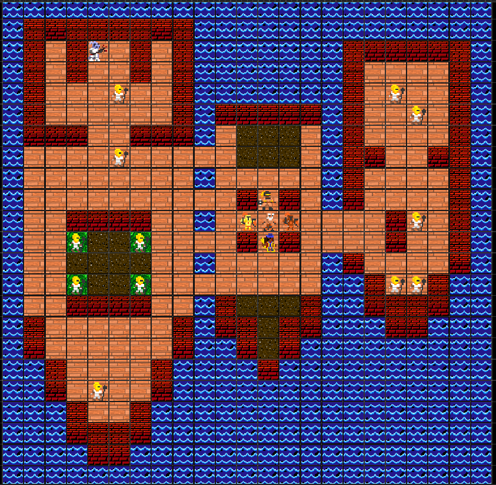
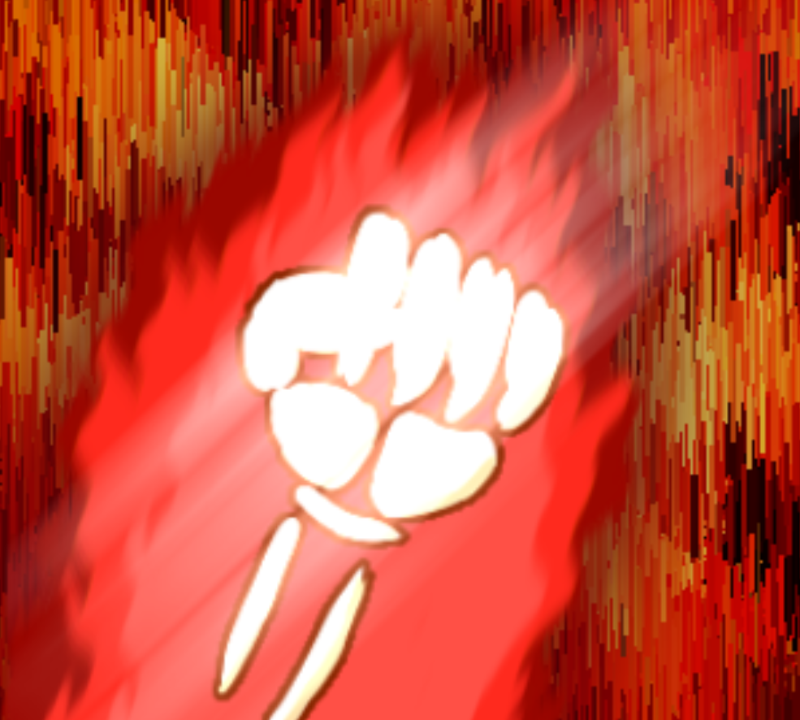
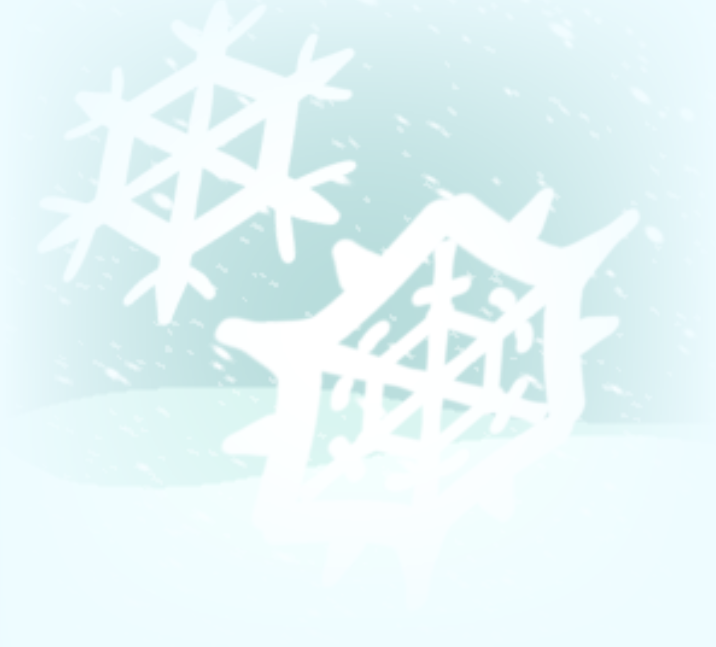
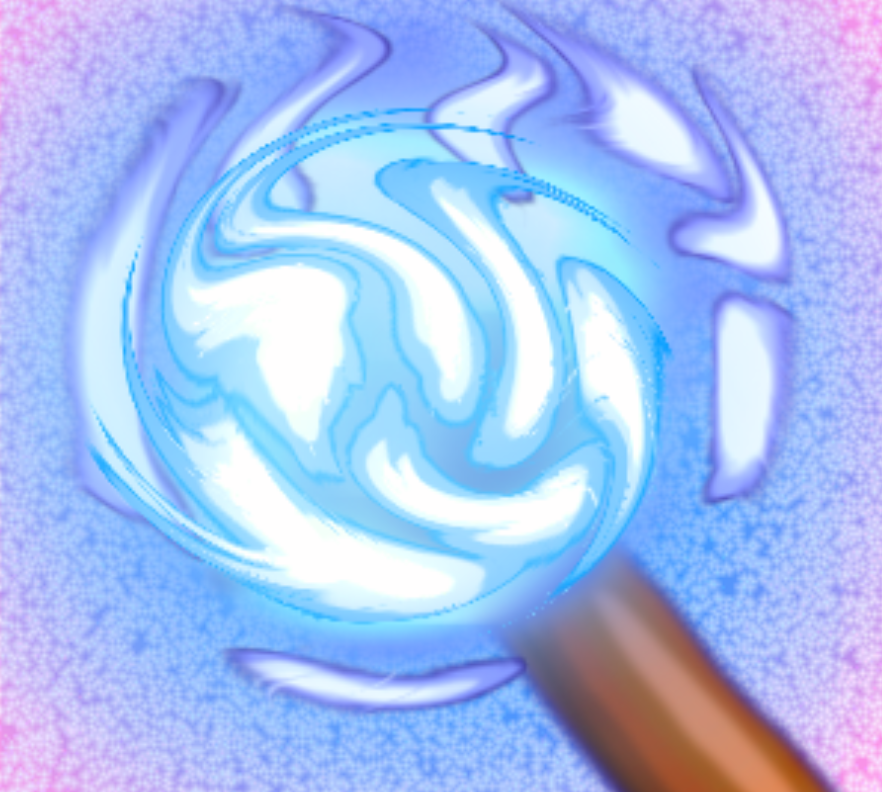
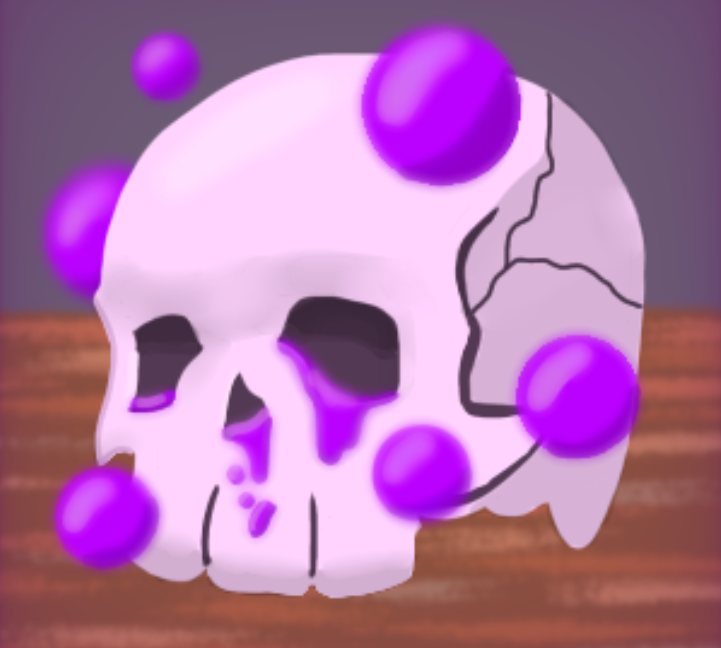
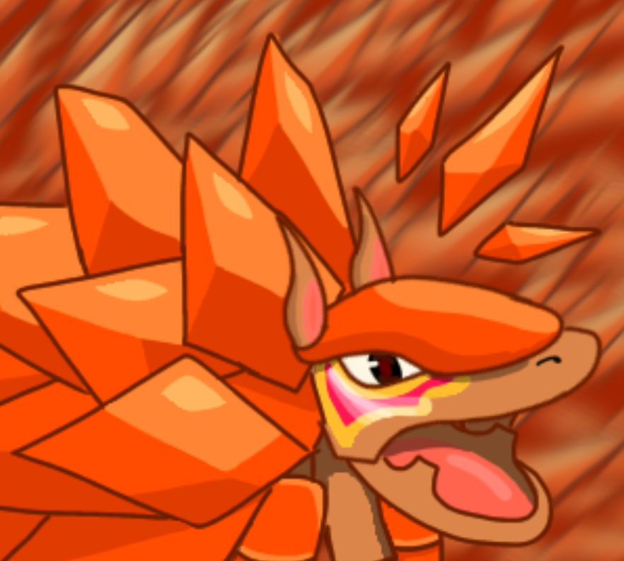
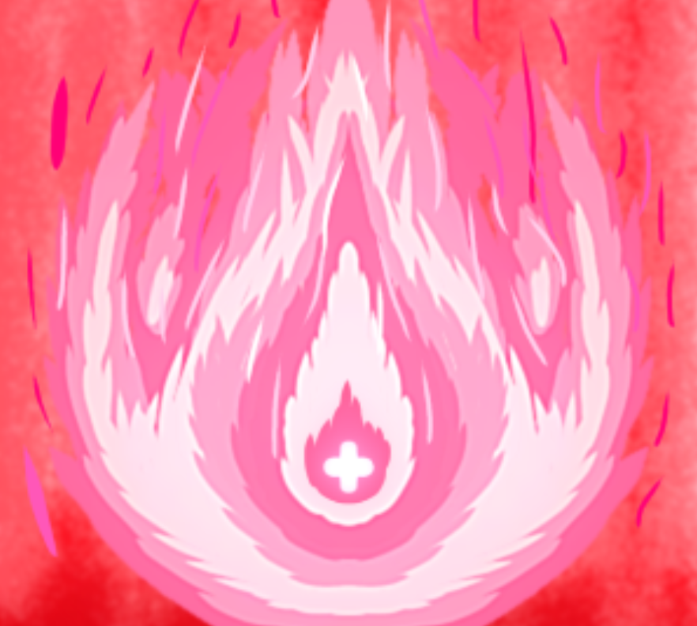
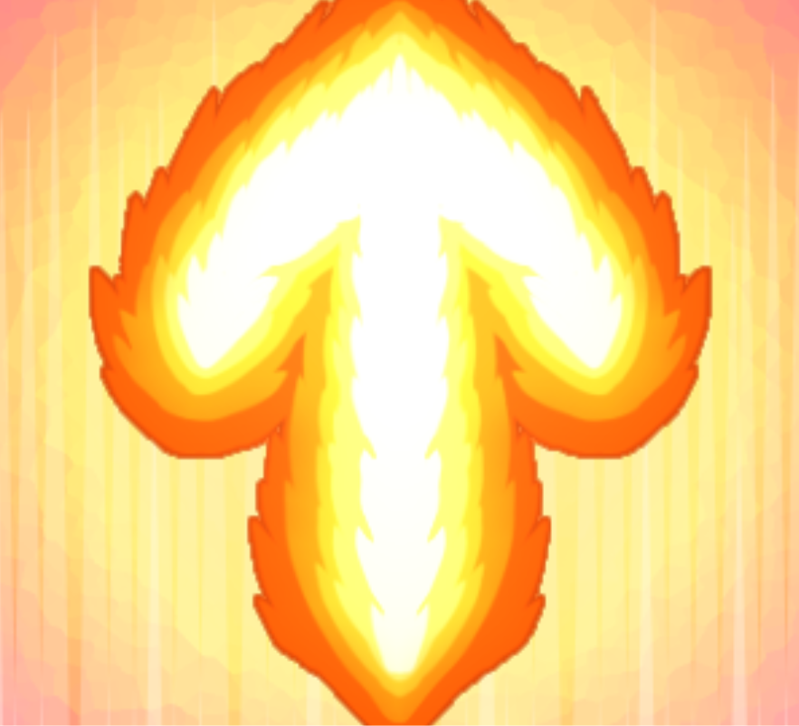